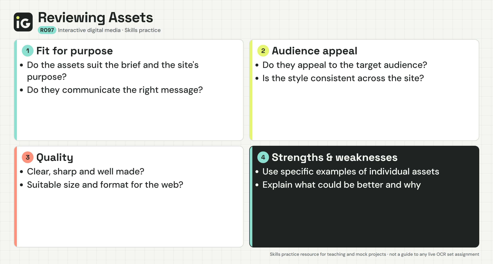

Technical quality
- Sharp, clear, correctly sized

Review how effective your assets are for the client and audience.
In this section you must review how effective your assets are before you explain how they could be improved. This is a written evaluation in your project log supported with screenshots of your assets.
You are judging how suitable your images, graphics, logos, buttons, backgrounds and other media are for your website and how well they support the purpose, target audience and client brief.
Write clear paragraphs explaining how well your assets perform in the following areas:
Explain which assets work particularly well and why they improve the overall quality of the website.
Identify any assets that are not as effective (for example: poor quality images, inappropriate colours, large file sizes, inconsistent styles, or assets that do not fit the theme).
Reminder: This is a written review in your project log. You are analysing how good your assets are before you suggest improvements.
Use this checklist to make sure you can cover every part of this topic.